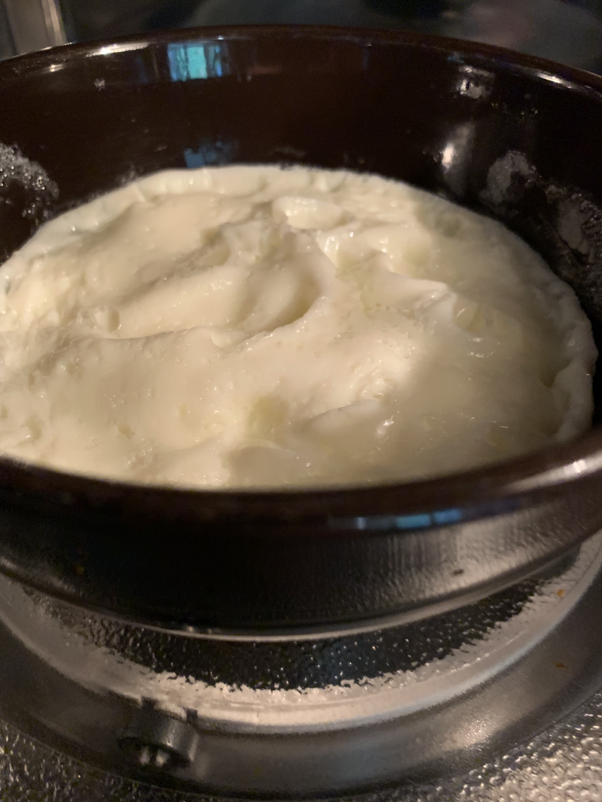

Egg Whites

Description
This is an easy "meal" if you will. It is fast to make
and can be kept int he fridge and grabbed in
the morning on the way to work for a convenient and high
protetin breakfast.
Ingredients
- Liquid Egg Whites (250 mL)
Intructions
- Pour egg whites into a microwave safe bowl
- Microwave for 3 minutes
- Take out and stir, breaking up the solid parts and mixing
around the liquid. This will give the eggs a more
consistent texture.Note that the bowl may be hot, so
use precaution when mixing the contents
- Microwave for another 3 minutes
- That's it. Feel free to add minor additions such as
salt and pepper, cayenne pepper, Sriracha sauce, etc. to
fit your pallette. I personally eat them plain as I enjoy
the egg flavour and texture on its own
Home